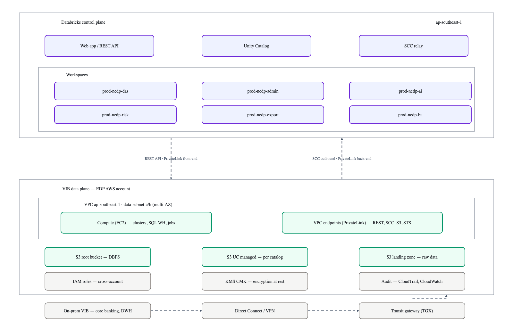
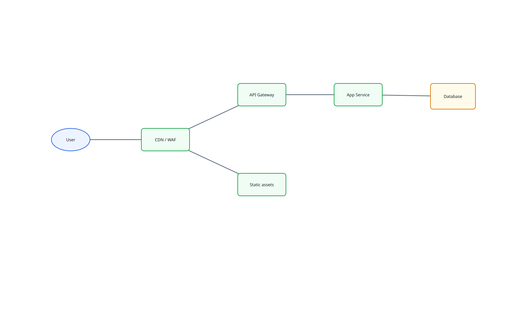
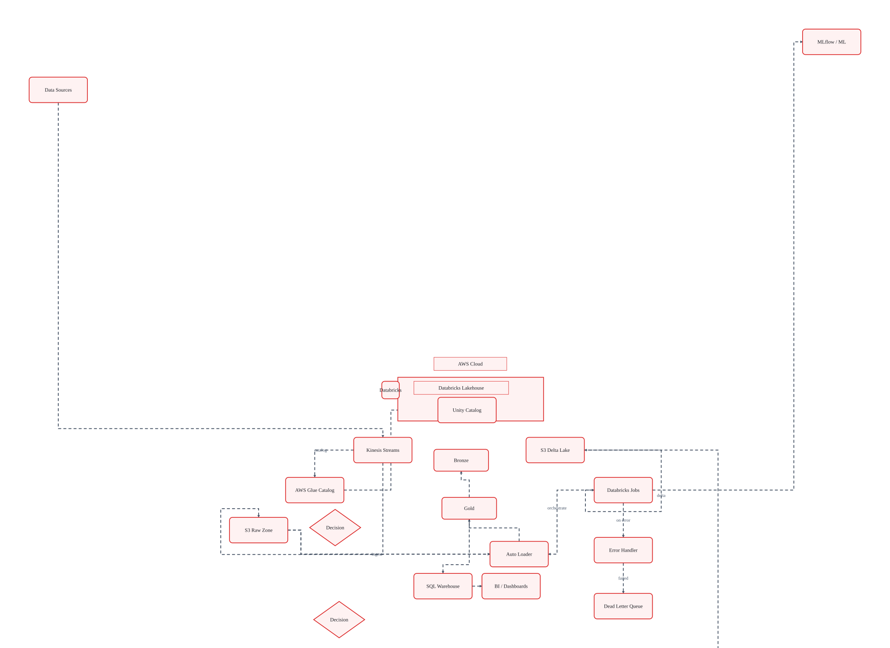
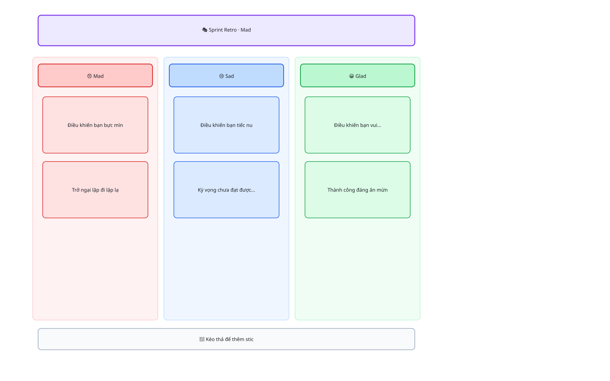
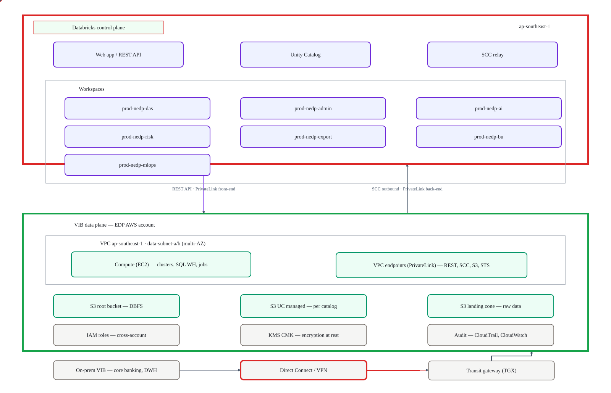
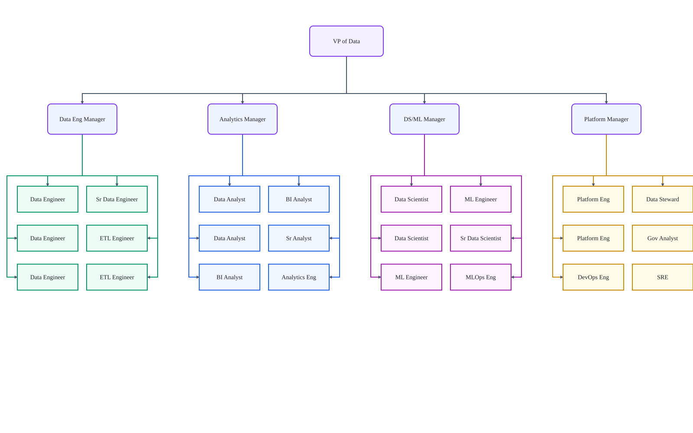

Live Demo
Không cần tin lời chúng tôi — thử luôn

Đây là noddle thật đang chạy — không phải video.
✦ AI-Powered Diagramming
noddle là editor sơ đồ cộng tác realtime — tạo diagram từ text, ảnh chụp whiteboard hay Mermaid trong vài giây, rồi cả team cùng chỉnh trên một board.

Live Demo
Đây là noddle thật đang chạy — không phải video.
Tính năng
Từ ý tưởng đến sơ đồ chỉn chu trong vài giây — không kéo thả từng ô.

Con trỏ của đồng nghiệp, comment ghim vào shape — mọi thứ live trên cùng một board.

Mọi thay đổi đều có lịch sử — quay lại bất kỳ phiên bản nào chỉ với một click.

Không lock-in: import mọi thứ đang có, export ra bất kỳ định dạng nào bạn cần.

Use Cases

noddle thay được cả draw.io lẫn tài liệu Word mô tả kiến trúc — giờ team tôi chỉ gửi một link.
Trưởng nhóm Solution Architecture · Khối Công nghệ
Pricing
Cá nhân dùng thử
mãi mãi
Team vẽ và quyết cùng nhau
thanh toán theo năm
Mọi thứ trong Free, cộng thêm…
Ngân hàng & tổ chức
giá theo quy mô triển khai
Mọi thứ trong Pro, cộng thêm…
About
Sơ đồ hay chết trong file đính kèm: một bản Visio trong email, một bản draw.io trên máy ai đó, một bản Word "mô tả kiến trúc" đã lỗi thời từ quý trước. noddle ra đời để team vẽ – nghĩ – quyết cùng nhau trên một board, luôn là bản mới nhất, luôn chỉ một link.
Và AI ở đây không phải một nút bấm sinh ảnh. Claude là một thành viên thật sự của board: nó xuất hiện trong presence, tự tay thêm shape, nối edge, sắp xếp layout — và bạn thấy nó làm việc theo thời gian thực, y như một đồng nghiệp.
FAQ
.drawio/.xml (kể cả nén),
giữ multi-page, group, waypoints và edge labels. Ngoài ra còn import Mermaid
.mmd và Board JSON — và export ngược lại các định dạng đó, nên bạn không bị khóa vào noddle.claude mcp add noddle). Agent sẽ đọc/tạo/sửa board và comment
dưới danh tính riêng của nó — xuất hiện trong presence và audit trail như một thành viên.